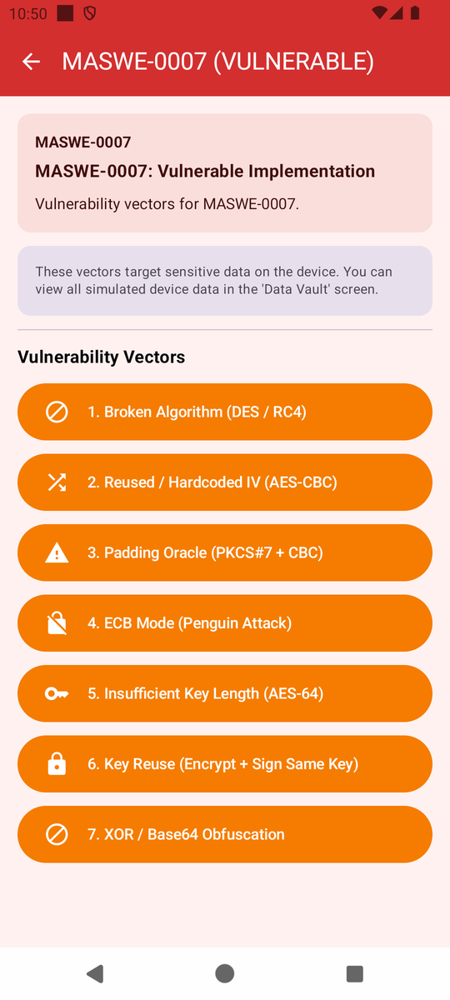
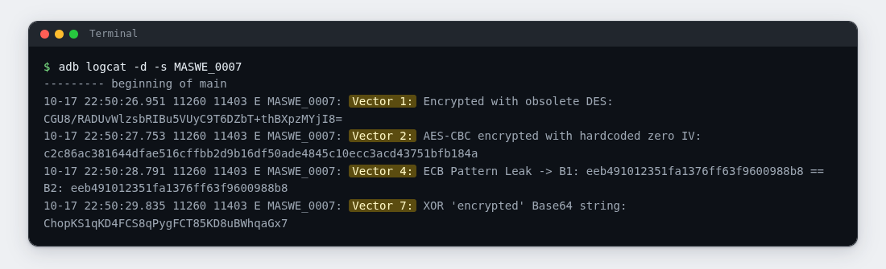
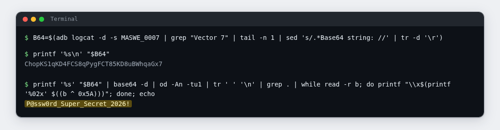
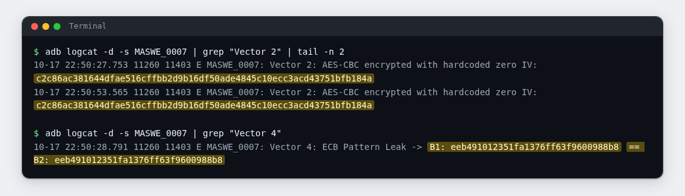

Lab 07: Encryption in Name Only
| Module | MASWE-0007: Improper Encryption |
| Category | MASVS-CRYPTO |
| CWE | CWE-327: Use of a Broken or Risky Cryptographic Algorithm |
| Time | ~30 minutes |
| Level | Beginner |
| Needs | Lab rules read · Lab 00: Setup complete · 🎯 MobSec Victim installed · adb working |
Self-paced lab
Collect the demonstrations' outputs from the system log and test what they reveal about the original data. Section E lists what to submit.
A · Requirement
The app should use encryption that protects data from someone who lacks the key. That requires an appropriate algorithm and mode, protected keys, and correct use of IVs or nonces. An unreadable output alone does not establish those protections.
Run the demonstrations and collect their log output. Reverse the XOR/Base64 operation to recover the password, then compare repeated AES-CBC ciphertexts and the blocks produced by ECB.
Do not read the project source code. Use the installed app and your terminal.
B · Validation
Run everything in one terminal (Git Bash on Windows). Ignore the app's result cards; your evidence is your own adb output.
1. Clear the log and open the module
adb logcat -c
Open 🎯 MobSec Victim, expand MASVS-CRYPTO, and open the MASWE-0007 row.
Incorrect dashboard subtitle
The row subtitle reads MASWE-0007: Secure Implementation. That is a bug in this training build. The screen marks itself MASWE-0007 (VULNERABLE).
2. Tap, then read what the app writes
Tap these four buttons, in any order:
1. Broken Algorithm (DES / RC4)2. Reused / Hardcoded IV (AES-CBC)4. ECB Mode (Penguin Attack)7. XOR / Base64 Obfuscation
The module lists seven vectors; this lab uses the four above. Buttons 3, 5, and 6 are covered in section G.

Then dump the module's log stream:
adb logcat -d -s MASWE_0007
Expected: one line per tap, each starting Vector N:. The tag is MASWE_0007, with an underscore. The outputs use Base64 and hex:
- Vector 1 prints a Base64 string for a DES operation.
- Vector 2 prints a hex string for an AES-CBC operation.
- Vector 4 prints two hex blocks joined by
B1: ... == B2: .... - Vector 7 prints a Base64 string for its "XOR encryption".

The next three checks test whether you can recover plaintext or identify repeated input from these outputs.
3. Reverse the XOR/Base64 operation
Vector 7 applies a constant XOR value to each byte and Base64-encodes the result. Reverse those operations using the constant supplied below.
First, pull the Base64 string out of the log line into a shell variable:
B64=$(adb logcat -d -s MASWE_0007 | grep "Vector 7" | tail -n 1 | sed 's/.*Base64 string: //' | tr -d '\r')
printf '%s\n' "$B64"
Expected: one Base64 string without surrounding log text. Keep it in the shell variable for the decoding command.
Now decode it and flip every byte back with the same constant, 0x5A:
printf '%s' "$B64" | base64 -d | od -An -tu1 | tr ' ' '\n' | grep . | while read -r b; do printf "\\x$(printf '%02x' $((b ^ 0x5A)))"; done; echo
Expected: the original password as readable text. Record how you recovered it without a separately protected key. Include the recovered value in your screenshot, but omit it from the written report.

Where does 0x5A come from?
The constant can be extracted from the app binary using the inspection techniques from Lab 04. Alternatively, try all 256 possible byte values and inspect the decoded outputs for readable text.
4. Compare repeated AES-CBC outputs
Tap 2. Reused / Hardcoded IV (AES-CBC) a second time, then compare its two ciphertexts:
adb logcat -d -s MASWE_0007 | grep "Vector 2" | tail -n 2
Expected: two lines with the same hex string. This AES-CBC demonstration reuses an all-zero IV, so encrypting the same input with the same key produces the same ciphertext. AES-CBC needs a fresh, unpredictable IV for each encryption. With the fixed IV used here, a reader can identify matching plaintexts by comparing ciphertexts.
5. Compare the ECB blocks
Vector 4 encrypts a text block that repeats itself and prints both halves:
adb logcat -d -s MASWE_0007 | grep "Vector 4"
Expected: a line of the form Vector 4: ECB Pattern Leak -> B1: <hex> == B2: <hex> in which the two hex strings are equal. ECB mode encrypts every 16-byte block on its own with no linking, so identical plaintext blocks become identical ciphertext blocks. This is the precondition for the famous ECB penguin picture: patterns in the plaintext stay visible in the ciphertext.

6. Optional: let the project's checker confirm it
If you have the project repository on this machine:
bash features/maswe0007/poc/adb_verify.sh
Expected: [!] CRITICAL VULNERABILITY CONFIRMED (MASWE-0007 / CWE-327): followed by the DES line, the zero-IV line, the ECB line, and a recovered plaintext: line that the script decoded itself. If vectors 3, 5, or 6 were also tapped, it adds a line naming what it captured.
C · Questions
Answer these in your notes before moving on:
- ✍️ In step 3, you recovered the password using the logged string and a fixed XOR constant. Explain why that operation does not adequately protect the password.
- ✍️ In step 4, two encryptions of the same text produced the same output. What was wrong with the IV handling, and what could an attacker learn from the repeated output?
- ✍️ All four outputs came from the system log. What logging change would have prevented this way of collecting them? Would that change also fix the encryption weaknesses?
D · Finding
You have the finding when all four are true:
| Test | What it shows |
|---|---|
| The step 2 dump | Four "encrypted" outputs, available to anyone reading the log |
| The step 3 output | The XOR/Base64 operation reversed to readable text with no key |
| The step 4 output | Two identical ciphertexts for repeated input: no randomness in the scheme |
| The step 5 output | Equal ciphertext blocks for equal plaintext blocks: ECB leaks structure |
If you ran step 6, its output is an independent confirmation of the same artifacts. Attach it as well.
E · Evidence
Hand in:
- 📷 Screenshot 1: the step 2 dump, showing the four
Vector ...lines. - 📷 Screenshot 2: the step 3 commands and their output, with the recovered string readable.
- 📷 Screenshot 3: the step 4 comparison, the step 5 line, or both.
- ✍️ Two or three sentences, in your own words:
- which weaknesses you showed (a fixed XOR constant, a reused IV, and repeated ECB blocks),
- why "the output looks unreadable" is not the same claim as "the data is protected",
- one real-world consequence of encrypting with a scheme like vector 7's.
Submit these through your training channel. No long report is needed.
F · Hints
Hint 1: the log dump is empty
- The tag is
MASWE_0007with an underscore.-s MASWE-0007matches nothing. - Tap a vector, then dump right away. Running
adb logcat -cbefore your taps keeps the output short. - If
-sgives you nothing at all, drop it and grep:adb logcat -d | grep MASWE.
Hint 2: the decode step misbehaves
- Check the extraction first:
printf '%s\n' "$B64"must print one clean Base64 string with no spaces or log text around it. If it is empty, re-run the first command and confirmVector 7appears in your dump. - On macOS,
base64 -disbase64 -D; this lab assumes Git Bash. - If the output is garbage, your
odmay not support-An(without it, address offsets get mixed into the byte stream). A text-only fallback with Python:printf '%s' "$B64" | python -c "import base64,sys;print(''.join(chr(b^0x5A) for b in base64.b64decode(sys.stdin.read().strip())))" - If you want to skip being told the constant, loop over all 256 values and keep only the line that reads like text:
for k in $(seq 0 255); do printf '%s' "$B64" | base64 -d | od -An -tu1 | tr ' ' '\n' | grep . | while read -r b; do printf "\\x$(printf '%02x' $((b ^ k)))"; done; echo " <- k=$k"; done | grep "@"
Hint 3: the script step
- Run it from the repository root; it needs
adbon PATH and the module's vectors already tapped (at least 1, 2, 4, and 7). - If it reports nothing found, the log buffer rotated: tap the vectors again and rerun.
- Exit code 0 means confirmed; 1 means nothing found yet.
G · Explanation
Open only after sections C and E are done
Complete your answers and capture your evidence before opening the explanation.
What each button really does
This is MASWE-0007, covering CWE-327 (broken algorithm) with CWE-326 (inadequate strength), CWE-329 (predictable IV), and CWE-323 (key reuse) roots.
The seven demonstrations use these operations:
- DES with the key
insecure, an eight-byte English word. DES has a 56-bit effective key, which is inadequate for protecting sensitive data. - AES-CBC with the key
1234567890123456and an all-zero IV, so the output is a pure function of the input. - AES-CBC with the key
FixedSecretKey12, a constant IV, and no authentication tag. This pattern can allow padding-oracle attacks when an implementation exposes distinguishable padding errors. The demonstration does not run an oracle. - AES-ECB with the key
16ByteKeyForECB!on a doubled 16-byte block, which is why your two blocks matched. - DES again, with an eight-byte key of all
0x42. - One RSA-2048 pair used both to encrypt and to sign. The pair is generated fresh per tap; the demonstration concerns reuse across purposes, without exposing the key.
- XOR with
0x5Aplus Base64, the one you reversed by hand.
The symmetric keys and XOR constant listed above are literals in the app binary and can be recovered from the APK using the techniques from Lab 04. The ciphertexts are available in the log. Their unreadable appearance does not show whether the algorithm or key handling protects the original data.
Why it matters:
- Deterministic encryption leaks equality: equal ciphertexts tell an attacker the plaintexts matched, and chosen-plaintext attacks build on that.
- ECB reveals repeated blocks in structured data, including records, images, and tokens.
- CBC without authentication can allow a padding oracle if error responses distinguish padding failures.
- A hardcoded key can be extracted by anyone who obtains the app package.
What the secure app does instead:
The :app-secure implementation uses AES-256-GCM with a fresh random nonce per operation and separate key material for each purpose. It does not log sensitive values.
Go deeper:
- Reference page: MASWE-0007: Improper Encryption
- The vulnerable code lives in
features/maswe0007/src/main/java/com/hasantuncay/mobsec/maswe0007/vulnerable/Maswe0007VulnerableRepository.kt. - The module's automation is in
features/maswe0007/poc/: a Semgrep rule pack for CI, a Frida hook for runtime inspection, and theadbscript from step 6.